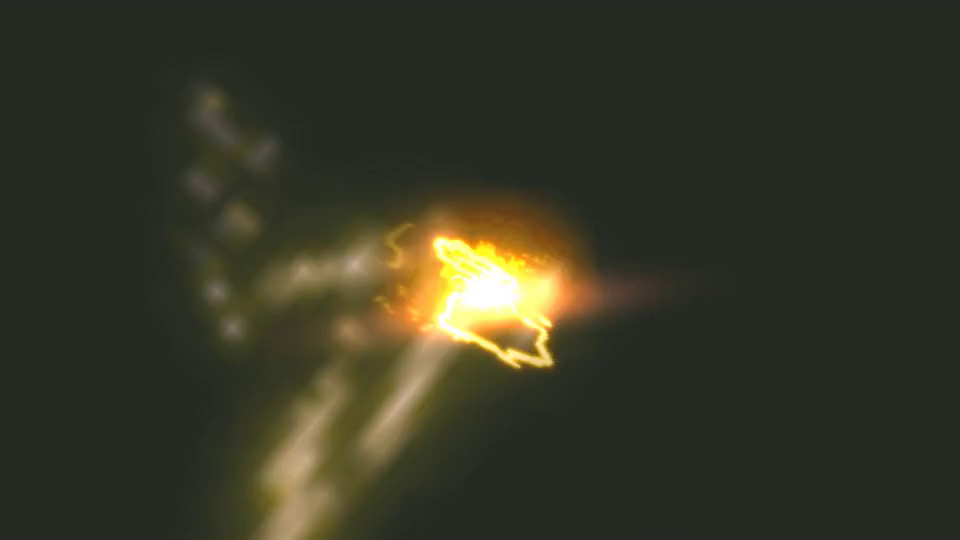

B02 / 053 · 253帧完整原序列
11 / 253 · 0.37s
33 / 253 · 1.10s
53 / 253 · 1.77s
75 / 253 · 2.50s
95 / 253 · 3.17s
117 / 253 · 3.90s
137 / 253 · 4.57s
159 / 253 · 5.30s
179 / 253 · 5.97s

201 / 253 · 6.70s
221 / 253 · 7.37s
243 / 253 · 8.10s